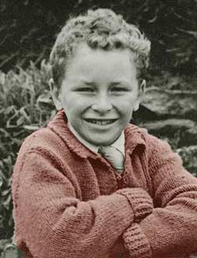

|  | |
| My mother used to make the most wonderful cardigans. I vaguely remember this one being a rusty colour so I have modified the image to show that. School ties were always too bulky! | |
| This image started as a black and white print and was scanned as greyscale.I coloured a duplicate layer and then erased back to the underneath black and white layer. | |
| A school photo. This one was taken outside. | I think I was about 8 |
|
Click
over the image to go back to the thumbnails
|
|
| Chris Jennings - Self Portrait |
Last updated:
|